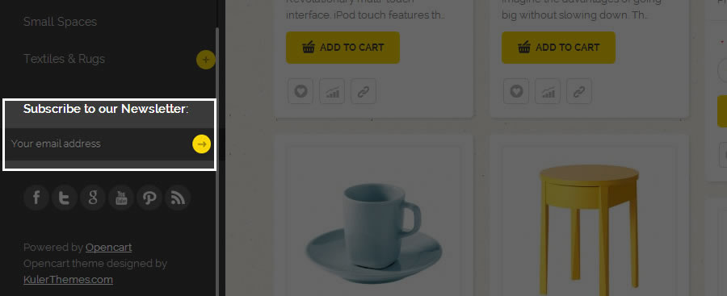

Arcu
Responsive Template For OpenCart Store
By Kulerthemes
Arcu is a responsive OpenCart theme that infinitely customisable and therefore aesthetically versatile to your potential brand. Built with a modern and unique design, our goal is to help you create an amazing store for your business with this amazing theme.
Every bit of screen space is used and the result can be downright mesmerizing!
How to install Arcu?
You don’t have to overwrite or modify OpenCart core files when installing and upgrading Arcu as the theme is located in a separate folder (named Arcu) from the OpenCart core structure.
In order to install Arcu, follow these steps:
- Download Arcu.zip to your computer. The folder contains 4 folders: Licensing, Documentation, Design and Installation
- Installation / 1.5.4.x - use this folder if the version of your OpenCart installation is 1.5.4.x
- Installation / 1.5.5.x - use this folder if the version of your OpenCart installation is 1.5.5.x
- Installation / 1.5.6.x - use this folder if the version of your OpenCart installation is 1.5.6.x
- In each folder, you will see folders modules and theme
- Upload the folder theme to catalog/view/theme on your web hosting via FPT.
You’ve uploaded Arcu to your OpenCart store.
How to activate Arcu?
Once you’ve installed Arcu to your host, you need to make it your default store. Follow these steps:
- Open your browser, go to yourdomain.com/admin to get access to the OpenCart admin.
- Login with your admin user name and password.
- Choose System >> Settings in the menu tab in the OpenCart admin.
- Click Edit link in Your store (default) in the Settings page.
- In tab Store, choose Arcu as your default store theme.
Install the Demo QuickStart

Get a website which looks 100% exactly as the demo in 2 minutes with QuickStart package
QuickStart is an OpenCart package which is personalized for the theme. It enables you to to install a whole new OpenCart CMS with a dummy website that looks 100% exactly as demo with few clicks. This package contains:
- Opencart version 1.5.6.4 installation file
- Start theme installation file
- All module installation files
- Sample data
Currently, we just have
To install QuickStart package, please follow this video tutorial below:
How to install Sample Data?
If you purchase our product, it's no doubt that you are impressed by the demo of your themes. We do provide install Sample Data feature which help you build an OpenCart website that looks exactly as demo site in just 5 minutes. It's very easy for you to have a optimize set-up of our templates.
Unfortunately, it is available for only OpenCart version 1.5.5.1 .Moreover, it is suitable for new install OpenCart because when you install Sample Data your data will be deleted. So please be sure that you ready to install it.
To install Kuler Sample Data , please follow this video tutorial below:
Or follow detailed text instructions.
Let we start!
- Step 1: Log-in OpenCart Admin
- Step 2: Install all modules
- Step 3: Install our theme in your Shopping Cart
- Step 4: Go to Extensions >> Modules
- Step 5: Install and click "Edit" in KulerCP
- Step 6: In "General" tab you can see 3 options : "Download Sample Data", "Install Sample Data" and "Download Sample Images"
- Step 7: Click "Download Sample Data" to download sample data package.
- Step 8: Next, choose "Install Sample Data" and you will see "Module Checker" panel. Make sure that you have all necessary modules installed.
- Step 9: After all required modules have been installed, choose "Install Sample Data" again to continue the process.
- Step 10: Since the demo image is pretty big, you will have to download it separately, so choose "Download Sample Images".
- Step 11: Unzip sample image package, then upload folder image/data to your_root_folder/image/data on your web hosting via FTP, choose replace if you have been prompted to (normally, your root folder should be www or public_html)
- Step 12: Come back and re-check your shopping store.
How to install our OpenCart modules?
In the installation file, you will see folder modules together with folder theme. There are 4 OpenCart modules enclosed in it including the following folders:
- Kuler CP
- Kuler Newsletter
- Kuler Socialicons
- Kuler Product List
These ones are developed to support the theme functions. You need to install, activate and configure them.
In this section, I will take Kuler Control Panel (Kuler CP) as a sample to instruct you how to install OpenCart modules to use with Arcu. You do the same steps with the rest.
- Extract the file KulerCP.zip to folder.
- Open the folder and see two files admin and catalog
- Upload these files under the public_html folder of your hosting account (you can use FTP to upload)
- Go to your OpenCart Admin. Choose Extensions >> Modules and you will see Kuler CP in the module list.
- Click Install link on the right side of Kuler CP.

Kuler CP has been installed to your store. The next step is to configure the module, click Edit link and follow us on the next section.
How to configure module KulerCP?
KulerCP is geared for end-users so all configuration or customization is made VISUAL – it’s all about Clicks and See, no code intervention.
Let's configure KulerCP module step by step:
- Step 1: Log In back-end
- Step 2: go to Extentions >> Modules
- Step 3: Install module KulerCP and click "Edit"
In the main screen, all features are grouped into 3 sections: General, Bottom and Utilities
GENERAL
- Sample Data: as we mention in How to Install Sample Data. Ignore it if you do not want to install.
- Default Theme Color: helps you easily change your site base colour.
- Choose the colour , click "Save" and see how it affect your site.
- Google's free service: to add high quality fonts to your OpenCart powered site.
- Turn on Google Fonts for Heading and Google fonts for Body.
- You can use any font from Google Fonts directory or even choose between variable font weight options.
- Click "Update lastest Fonts" then click "Save".
- Custom Copyright: to change copyright text to your own
- Turn on use custom Copyright
- Type in your own copyright text
- Enable this option by click Save and you're done
(You can implement not only pure text but also any html element like hyperlink, image ... ect)
DESIGN
With changing colors in Theme Options you may set your site to a color combination that suits you the best. Colors are not predesigned, so you may set any color you want.
You may check some color combinations (each theme comes with 6 predefined colors) for changing the main template color from Default Theme Color select box.
BOTTOM
You should see these are 4 blocks near the bottom. Now, let's see how to implement them.
Information
- Status: On
- Title: Name of the module for example "About Us"
- Description: Type your description
- Click "Save" and re-check in your store
Contact
- Turn on "Status"
- Title: Contact
- Fill in necessary information.
(Due to the change in API version 1.1, you will have to create a widget in your Twitter account rather than only provide your Twitter username in version 1.0)
- Log-in your Twitter account
- Click the settings icon on top right panel and choose Settings
- Click Widget on the left side menu.
- Choose create new to create a new Widget if you don't have one.
- Choose your widget settings
- Choose Create widget and you will be provided embed code.
- Copy this embed code and paste it to Embed Timeline Code in Kuler CP
- Select "Save"
Twitter didn't give you much choice about your widget looks and feel.
( We gues you've noticed that you don't have to enable all 4 columns, just enable which one you need and column width will be calculated automatically.But thanks for KulerCP, you can now choose between various layout and customize your widget the way you want just by a few clicks.)
- Background : On
- Border: On
- Header: On
- Footer: On
- Scroll Bar: On
- Click Save and re-check in your store
- Turn on Status
- Usename: type in your Facebook account.
At the last, screen, you will have to choose your widget settings, choose Create widget and you will be provided embed code.
UTILITIES
- Sitemap Generator: to generate a speical XML/Gzip sitemap which will help search engines liek Google, Bing, Yahoo and Ask.com to better index your website.
- Turn on all the fields
- Click "Save"
- Click Generate and your sitemap file will be generated automatically.
- "Sitemap complete URL" fields display your sitemap name and location, you can choose them manually or keep default settings.
- Google Analytics: allows you to track your website easily and with lots of meta data.
- Turn on "Google Analytics Status"
- Google Annalytics Postion: Choose at the bottom of page
(Please note that it will take some days for your data to be displayed in your Google Analytics account.)
- Compression: built to greatly imporve website loading speed by combine all CSS, Js files and minifi them
- Payment icons: display all payment methods that accepted in your website via KulerCP.
- Turn on status
- Enable the payment icons that you use
- Zoom Effect: Turn on if you need this feature
How to configure module Kuler Newsletter?

Kuler Newsletter in the front-end
For online marketing matter, we do provide a module that let you easily integrate MailChimp to your website. You just need to type the email address and click " Subscribe" so your email is automatically subscribed to mail-chimp list.
Now we show you how to configure this module. In this demonstration, we will configure and place the Newsletter module right below Main menu.

- Step 1: Log in OpenCart admin
- Step 2: Choose Extensions >> Module.
- Step 3: Install Kuler Newsletter then click " Edit".
- Step 4: Click " Add module"
- Step 5: Choose module title and all necessary options.
- Title: Name of module.
- Mainchimp API Key: We need a MailChimp API Key*, so you will have to login your MailChimp account.
- Make sure you filled in necessary information.
- How to get MailChimp API Key?
- Login to your MailChimp account and make sure you have at least 1 List, so subscribers will be listed here.
- Choose " Accounts" >> API Keys & Authorized Applications.
- Copy API Key >> fill "MailChimp API Key" in OpenCart Dashbroad.
- Step 6: Click " Save".
- Step 7: After setting, you will see your Mailchimp list appear. If not, just click " Get MailChimp list" bottom on the right to update your list.
- Step 8: Click " Save" again and re-check it in your shopping cart.
Provides an easy way for your visitors to sign up to your MailChimp list. Simply provides your MailChimp’s API key, choose an appropriate list and you’re ready to go.
How to cofigure module Kuler Advanced HTML?
Basically OpenCart limits you in 4 positions and doesn't give you much choice to bring more " life" to your website. So we are made a step and now you can create such beautiful banners with module Kuler Advanced HTML. Or even display multiple modules in 1 position, here you will see we placed Kuler Newsletter and Kuler Social Icons module together. In this tutorial we will show you how to do this.
we will create a new module and place 3 banners here, just like in our demo.
- Step 1: Log in OpenCart admin
- Step 2: Choose Extensions >> Module
- Step 3: Install Kuler Slides then click " Edit"
- Step 4: Click " Add module"
- Step 5: Choose module title and all necessary options
- Title: Name of module
- Layout: Choose " Home".
- Step 6: Click " Image" button and find the image you want to upload
- Step 7: Select " Save"
Now you see 3 banners that have been displayed in top; but it's not done yet since they are all aligned to the left.
We are going to show you a little trick to make them Center aligned, now click Source Button to the open code view.
Remove these P tag and place each IMG tag in a new line for better view.
We implemented the predefined CSS style for grid layout so all you have to do is place your image tags inside them. There are 3 image tags, so the class name should be " grid-3"
Click " Save" and look at the front-end.
Now you can see they have been divided into 3 blocks width equal width, also have been center aligned nicely.
You can also place mutiple modules togther as well. In demo site, we placed 2 modules Kuler Social Icon and Kuler Newletter side- by- side. To do that, you'll have to prepare 2 modules that you want to put inside Kuler Advanced HTML module. Those modules must be installed and set up correctly, you can also use disable module too. You'll realize that, each module will have additional field called Short Code, it's generated automatically based on module title. If you want to place any module inside Kuler Advanced HTML module, just copy this Short Code and paste there. Make sure that you use unique name for each module title to avoid conflict. Now, save your module settings, copy and paste Short Code you got from Kuler Newsletter and paste it to Kuler Advanced HTML module.
One of hottest Kulerthemes modules for OpenCart, it gives you ability to place 2 or more modules inside one HTML module and place it anywhere on your website.
How to update KulerThemes products?
Once you’re our customer, you’re free to update the purchased themes. We keep on updating our themes and integrating more modules to the themes monthly.
You can update by following these steps:
Step 1: Log in to our website kulerthemes.com

Step 2: Hover the PC Mouse on LOGIN button in your top right corner and you will see Product Download link. Open it.
Step 3: Now you’re in the Product Download section already. Download the needed package to your computer and unzip it. For example, if you purchased Arcu Pro, please download the package Arcu Pro here.

Step 4: Copy the installation file to overwrite your old file.
File structures
CSS Structure
- stylesheet.css - Main stylesheet
- colors.css - stylesheet for 6 predefined colors
- module-styles.css - stylesheet for additional modules
- responsive.css - stylesheet for tablet / mobile devices
- ie.css - stylesheet for IE8 and older
- popup.css - stylesheet for lightbox in product details page
- carousel.css - stylesheet for default carousel module
- slideshow.css - stylesheet for default slideshow module
Javascript Structure
- pop.js - javascript code for lightbox in product details page
- utils.js - javascript code for smooth scroll, ie detection and toggle
Sources and Credits
I've used the following images, icons or other files as listed:
- Easy Accordion by Andrea Cima Serniotti
- Magnific Popup by Dmitry Semenov
- CSS3 PIE by Jason Johnston
- Color Picker by Stefan Petre
- jQuery UI Nested Sortable by Manuele J Sarfatti
Wrap up
You’ve finished all installation with Arcu and the modules.
For basic OpenCart Tutorials, please visit our OpenCart Tutorials series here:OpenCart Tutorials
How to start an online store with OpenCart?
To get support from us, please head to KulerThemes Support Forum or contact us by email contact@kulerthemes.com
Cheers!
KulerThemes